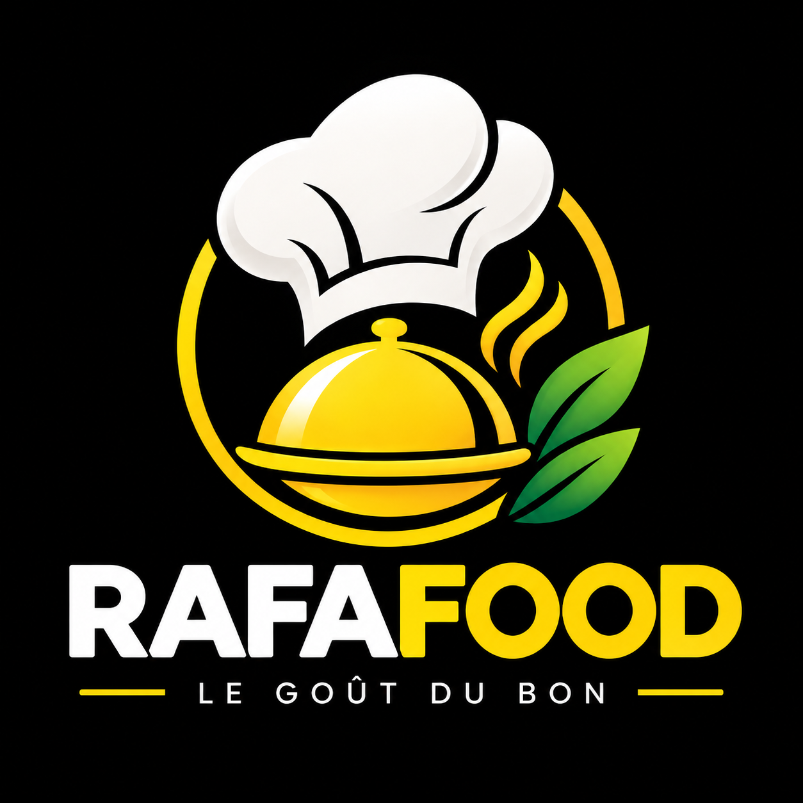

Données utilisées
Selon les fonctions que vous utilisez, RafaFood peut traiter votre prénom, nom, adresse e-mail, adresse de livraison, contenu de commande, préférences de retrait ou de livraison et échanges liés à la commande.

RAFAFOOD Retour au siteCette page explique quelles informations sont utilisées lorsque vous créez un compte ou passez commande sur RafaFood.
Selon les fonctions que vous utilisez, RafaFood peut traiter votre prénom, nom, adresse e-mail, adresse de livraison, contenu de commande, préférences de retrait ou de livraison et échanges liés à la commande.
Elles servent à créer et sécuriser votre compte, enregistrer et suivre vos commandes, préparer leur livraison ou leur retrait, et assurer le fonctionnement du service.
Le site s’appuie sur Firebase Authentication et Cloud Firestore pour la connexion et le stockage des profils, du catalogue et des commandes. Ces services sont fournis par Google. Consultez les informations de confidentialité de Google pour connaître les traitements opérés par ce fournisseur.
Le client peut payer via Cryptex Bank, une simulation de solde sans argent réel, ou choisir le règlement à la livraison ou au retrait. L’adresse e-mail Cryptex et les informations de commande nécessaires à la demande partenaire sont transmises au service Cryptex. RafaFood ne collecte aucune donnée de carte bancaire.
Les données sont conservées pendant 5 ans, sans dépasser une durée maximale de 10 ans. Des mesures de sécurité et des règles d’accès Firestore encadrent leur consultation.
Vous pouvez demander l’accès, la rectification ou la suppression des données personnelles vous concernant, sous réserve des obligations applicables. Pour toute demande liée aux données ou réclamation, écrivez à service.reclamation@Rafafood.fr ou appelez le 05 56 02 00 00.
Le responsable du traitement est indiqué comme étant Rafael Compagny, représenté pour ce site par le directeur de publication, Rafael Granero.